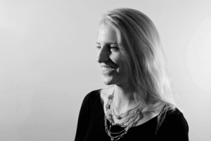
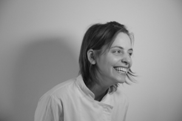

Jeanne est chargée des relations presse et de l'événementiel à la galerie kamel mennour. Elle est commissaire d'exposition indépendante et a notamment travaillé avec les collections des Moulin-Houzé des Galeries Lafayette pour l'exposition l'Abri à la galerie Michel Journiac, de la Société Générale pour l'exposition L'archipel des images, et du musée Cognacq-Jay pour la Nuit Européenne des Musées 2014.

Laura a travaillé plusieurs années dans le cinéma avant de se lancer en cuisine, qu'elle s'attache à faire sortir du restaurant par des événements tels que les séances de cinéma à manger Louxor je dévore, ou la Nuit Blanche avec En attendant Rio. Elle entend proposer une cuisine créative dans ses accords gustatifs, comme dans sa présentation et le voyage sensoriel qu'elle provoque.